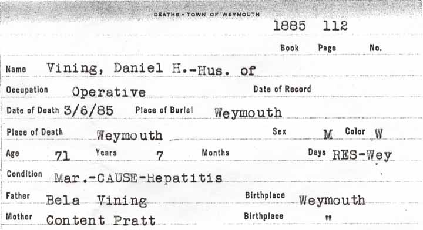
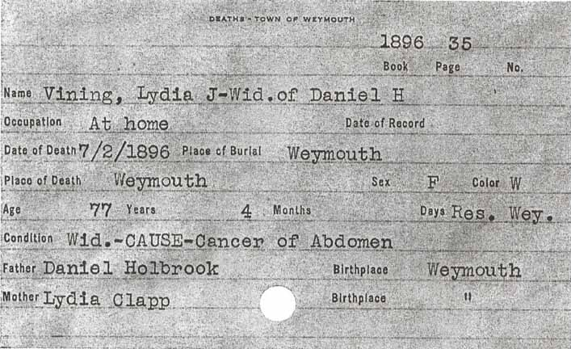

Census Data
| 1840 | 1850 | 1860 | 1870 | 1880 | 1890 | 1900 | |
| Daniel Hervey Vining | ? | 36 | 47 | 55 | 66 | dead | |
| Anna (Binney) Vining | ? | 40 | 52 | dead | |||
| Lydia J. (Holbrook) Vining | 50 | 61 | ? | dead | |||
| Anna Maria Vining | ? | 18 | [living? in separate household] | ||||
| Harriet Newell Vining | dead | ||||||
| Daniel Vining | ? | 11 | 21 | married and living in separate household | |||
| Harriet Vining | 11 | 19 | [living? in separate household] |


Death Data
Death record for Daniel Hervey Vining:
